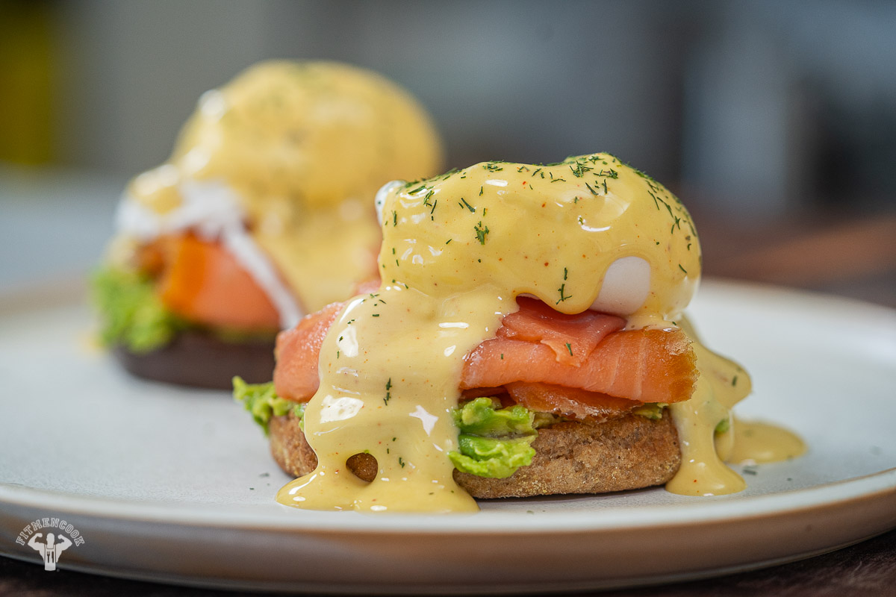

Smoked Salmon Eggs Benedict

How to make the eggs
Ingredients
- 4 Eggs
- 2 tbsp white wine vinegar
- 2 english muffins, halved
- a little butter, for spreading
- 8 slices smoked salmon
- chopped chives, to serve
For the hollandaise sauce
2 tsp lemon juice
2 tsp white wine vinegar
3 egg yolks
125g unsalted butter, diced
Steps
- First make the hollandaise sauce. Put the lemon juice and vinegar in a small bowl, add the egg yolks and whisk with a balloon whisk until light and frothy. Place the bowl over a pan of simmering water and whisk until mixture thickens. Gradually add the butter, whisking constantly until thick – if it looks like it might be splitting, then whisk off the heat for a few mins. Season and keep warm.
- To poach the eggs, bring a large pan of water to the boil and add the vinegar. Lower the heat so that the water is simmering gently. Stir the water so you have a slight whirlpool, then slide in the eggs one by one. Cook each for about 4 mins, then remove with a slotted spoon.
- Lightly toast and butter the muffins, then put a couple of slices of salmon on each half. Top each with an egg, spoon over some hollandaise and garnish with chopped chives.